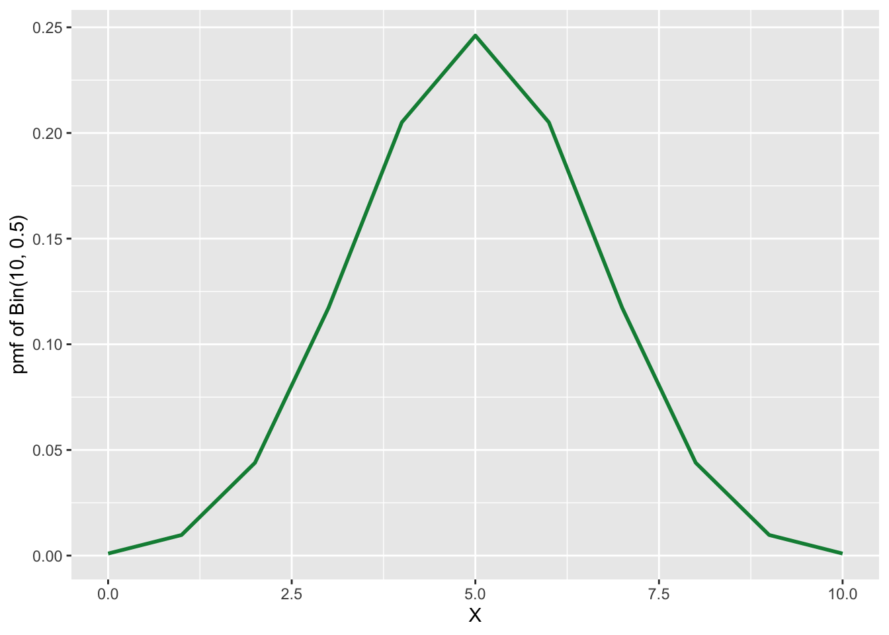
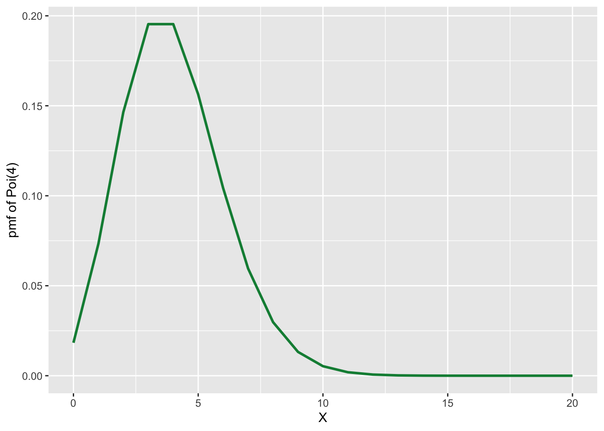

1.3 Data
Statistics is based on data and it’s analysis which has a rich and wide literature.
1.3.1 Types of Data
We generally deal with 3 kinds of data in statistics:
- Discrete Numeric Data
- Categorical Data
- Continuous Numeric Data
This paper gives a broad classification of data from measurements into 9 categories.
1.3.2 Discrete Numeric Data
Sometimes we see that many data are described in terms of numbers and many variables naturally take only discrete values. Such data can be visualized with Boxplot and Histograms.
Some imporatnt and key features of Discrete Numeric Data are Centre, Spread and the Spread.
Center Widely used measure of centre is the
meanor the average of the data set. Other measures include themedianand themode. They tell us where the data is centered around. For example, if we have a dataset of 10 numbers (Say, 1, 90, 48, 7, 7, 8, 9, 2, 3, 4) and order them by lowest to highest (i.e., 1, 2, 3, 4, 7, 7, 8, 9, 48, 90) and if we change the largest one by a larger number and smallest one by a smaller number the mean, median, mode may not change but if we change only the smallest one, then the mean will change but median and mode will not.Spread Understanding variabiity of the given data is very important. If one were to understand mean as specifying the center then the range of the data set around it is determined by its variability or spread. It is often measured by the variance(
var) or standard deviation(sd) or the inter-quartile range(IQR). For example, Suppose, we have a dataset of Statistics exam score where everyone does well and get scores 98, 99, 100 then the spread of the data is low. But in the same exam if some students get 0, 4, 10 and some students get 90, 92 then the spread is high.Shape To understand various distributional aspects of the dataset one needs to understand its shape. For example, if it is symmetric or skewed round it’s mean. Other aspects include among the data points which are more likely than others. For example, Suppose, we take the probability mass function of \(Bin(10, \frac{1}{2})\)

Then we know it’s shape is symmetric about \(x = \frac{1}{2}\). But if we take the density of \(Poi(4)\).

We will notice that it is not symmetric. The shape of the distribution is governed by the nature of it’s graph around the mean, wheather it is skewed left or right.